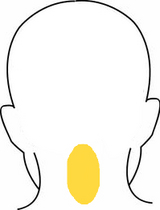

浄霊の急所について 26 （各論）
明主様御垂示 「脳溢血霊の小児麻痺」
信者の質問
「当年十五歳の少年で御座いますが、三年程前から首は右に曲り、背は彎曲して、体は斜めで、
手は全然利かなくはありませんがぶらぶらして蟹のような恰好をして歩きます。
現在御浄霊をさせて頂いておりますが、いかなる原因で御座いましょうか。
父親は轢死、祖父は脳溢血で死んでおります。」
明主様御垂示
「脳溢血の霊である。この通りの恰好で死んだものである。
気長に悪い所だけ浄霊する。
光明如来様をお祭りしなくてはいけない。でないと霊が救われぬ。」
明主様御垂示 「中風霊の憑依による脊髄性小児麻痺」
信者の質問
「九歳の男子、生後六ケ月頃風邪を引き、薬を飲ませておりましたところ、
ハシカのような状態となりましてより三日程して全身クラゲのようにクタクタになり、その状態が三日程続き漸次良好に向いました。
その後半月程に左手の肩の所が脱臼したようになりました。
指先が多少動くが腕の上下は出来ません。
日赤病院で診察して貰ったら脊髄性小児麻痺と云われました。
二十二年十月御守を頂き、浄霊を続けておりますが大した変化はありません。原因と浄霊法を御教示下さい。」
明主様御垂示
「中風の霊が憑いたらしい。
真症小児麻痺である。気長にやれば治る。
前頭部の奥を浄霊する。腕の付根もする。
少しずつ良くなってゆく。」
明主様御垂示 「舞踏病」
信者の質問
「舞踏病の原因、体的急所・・・」
明主様御垂示
「ひまさえあれば動いているという特殊の動物の憑依。
前頭部を中心に首周の塊、背中等が肝腎である。
血が充実すればよい。」
明主様御垂示 「美食かつ偏食な脳病患者」
信者の質問
「祖父もその子も脳膜炎で、孫はジフテリヤで死亡しました。
ただ今孫の一人が頭の病気で美食を好み、偏食です。霊的関係ですか。」
明主様御垂示
「頭に祟ってる。
祖父の子供も、果して脳膜炎かどうか判らぬ。医者によって診断が違う。ジフテリヤといっても、ジフテリヤでないものもあるから不確実である。
脳膜炎が治ると頭が良くなるから、決して心配はない。
浄化の毒を固めるから白痴になったりなどする。そういう恐れはない。
また、殆ど治る。そんな間違った事ない。
二十、三十でも脳膜炎になる事がある。前頭部が非常に激痛する。
特徴としては、眼をあけない、痛む、浄霊すると非常によく治る。前頭部をよく浄霊する。
霊的もある。胃に毒のあるための場合もある。
線香や壁土など、また、虫を食うのもある。これは動物霊である。
普通の偏食は胃中に毒があり、こういうのは背中を浄霊すると治る。」
明主様御垂示 「メニエール症状の浄霊の急所」
信者の質問
「私が浄霊している患者、五十六歳の男子、二十三年一月発病、
医師の診断の結果、メニエール症状で、原因は神経梅毒で、耳鳴りし、耳下腺が曲っていると言われ、
耳から水を取り、サルバルサンを十二本ばかりうちました。
医者で治らず色々手をつくし、信仰もあらゆるものをして、結局今では神様はないかのように申しております。
最近十回程浄霊させて頂きましたがあまりはっきり致しません。
全治致すでしょうか。また、浄霊法を御教示お願い致します。」
明主様御垂示
「治るには必ず治るが、最初から放置しておけば今頃すっかり治っている。
それを極力病気保存法と悪化法をやられていたもので、
大体神経梅毒なんてない。寧ろ無神経梅毒ならあるかもしれぬ。
梅毒は決して苦痛を伴わないものである。
耳鳴りは梅毒ではない。
耳下腺が曲ってるなどという事はあり得べき事でない。実に出鱈目も甚だしい。
耳下腺に毒あり、浄霊すれば治るが、悪くした方法が強烈のため手間どる。
浄霊個所は苦痛の所、耳鳴りは大抵耳下腺に毒があり、でなければ延髄である。
問題は十二本のサルバルサン注射がどこへ浄化して来るかが問題である。」
明主様御垂示 「心臓神経衰弱と臥床」
信者の質問
「心臓性神経衰弱の病状と御浄霊の要点・・・」
明主様御垂示
「大抵は死霊で、異常のため今にも死ぬように思うが、死んだ霊そのまま人間に感ずる。
寝ると反って動悸がして息が止る感じである。
霊が離れるとケロリとする。
故に心臓は大して関係はないのである。
発作時祝詞を奏げるといい。浄霊は前頭部である。」
明主様御垂示 「ノーシン中毒の浄霊の急所」
信者の質問
「私、生来頭痛にて多量のノーシンを服用し、按摩にも相当かかった事があるが、今肩凝りに悩んでいます。御浄霊法は・・・」
明主様御垂示
「ノーシンも中毒する。
肩へ薬毒が固まっているから、それを溶かせばいい。
霊力が強くないと溶け方が遅い。
固い所へ、奥へ入るよう集注する。」
明主様御垂示 「顔のむくみと紫色 浄霊で増す」
信者の質問
「当年四十四歳の寡婦、数ケ月浄霊するも顔はむくみと紫色が増大、浄霊中がたがた震える事もあります。いかなる訳ですか。いかにすれば治りますか。」
明主様御垂示
「漢方薬中毒であろう。腎臓をよくすると小便で出る。それに霊も憑っているであろう。」
明主様御垂示 「脊髄痛の浄霊の急所」
信者の質問
「三十四歳の厄払いを済ませてより、夜二時頃になると脊髄中央部の上方及び両側が強く痛みます。
特に呼吸が苦しくなり、毎夜時を定めてあり、三ケ月程続きました。
三年前に入信致しまして以来毎日浄霊致しております。
時を定めての痛みや苦しみは大変よくなりましたが、現在はなお脊髄の痛みは治りません。右の原因と浄霊法を御教示願います。」
明主様御垂示
「薬毒である。洋薬は余計に痛む。
背中を押して一番痛い所をやる。」
明主様御垂示 「シャックリの原因」
信者の質問
「五十歳の女、シャックリで苦しみます。
他人の手が身体のいずれのところにも触ると出ますが、その浄霊法を承ります。」
明主様御垂示
「横隔膜、首筋、頭である。これは治る。 」

明主様御垂示 「乳の痛む男性」
信者の質問
「男七十二歳、左乳が痛み、医師に三ケ月かかり痛み取れず、入会して一日置きに二十回位浄霊を続けましたが、
最近では食事は進むようになりましたが痛みは取れません。どうすればよろしいでしょうか。」
明主様御垂示
「背中、乳の後ろをやればよい。
必ず塊があるから、それをすれば除れる。」
明主様御垂示 「チブスの浄霊の急所」
信者の質問
「先日のチブス患者、兄弟四人相次いで結核で亡くなっております。
今迄信仰していた日蓮宗の方でしつっこくお浄霊を反対します。
一家族目が覚めて観音様にお縋りしております。
夜半に苦しくなるのは死霊でしょうか。」
明主様御垂示
「しつこいのはすべて邪神である。
本当の正神はあっさりしている。これで判別すべきである。
狐霊が祀ってくれと云うなら早く祀ってやった方がよい。
チブスの症状は夕方四時頃発熱し脈と熱は平行せず脈が低い。
チブスは腹部を浄霊すれば二、三回で癒る。
話を総合すると蛇の霊でしょう。蛇の霊は逃げ廻る。
兄弟四人結核で亡くなったから、その誰か一人の霊でしょう。」
明主様御垂示 「平均浄化と痛みの移動」
信者の質問
「男子、四十五歳で、手が動きません。
（軍隊服役中）昨年の九月、浄霊を受けられ、五ケ月程で大変楽になりました。
本人も家族の者も御力を頂かれ、今年の二月光明如来を御祭りしました。
その後段々腰が動かなくなりました。その原因はどうですか。」
明主様御垂示
「腰に平均浄化が起った。
手の毒が溶けて無くなると外の部が平均に減り、浄化が起る。腰を浄霊すれば治る。
平均浄化は最初の浄化より早く治る。
痛みは移動せぬ。強い痛みを除ると他の個所に痛みを感ずるまで。
その他、蛇の霊の時は移動する。関節リュウマチは蛇の霊で、食い付く。非常に痛むが、難症でも一週間以内で必ず治る。」
明主様御垂示 「生霊が原因の下腹の塊」
信者の質問
「二年程前、お腹に妊娠四ケ月位の塊があり、浄霊二ケ月程にて治癒致しましたが、最近に至りまた出来ました。
痛みも苦しみも御座いません。何か霊的の原因があるでしょうか。」
明主様御垂示
「生霊の場合がよくある。
霊的の時は、臍から下膀胱附近が脹る。重苦しい。
霊的でなくこれは腹膜であるから、腎臓をよくする。
腹部はそう浄霊の要はない。肩胛骨から背中である。」
明主様御垂示 「子宮脱出の浄霊の急所」
信者の質問
「六十歳の女、子宮が下るので困っております。御浄霊の方法をお教え願います。」
明主様御垂示
「子宮を吊っている筋が弛んで、その筋に毒が固まっているのである。
子供を沢山生んだ人に多い。若い人だとじき治るが、老人だから厄介だ。一名「なす」と言う。
股をよく浄霊する。
以前に農婦でこの病気の者を治した事があったが、これは生霊のためであった。
生霊は男女関係に多い。美人に多くある。子宮、卵巣等を犯す。」
明主様御垂示 「頻尿の浄霊の急所」
信者の質問
「本年十一歳の男子、小便が近く、浄霊も四年前より続けています。
効果がはかばかしくありませぬ。霊的因縁でしょうか。御教え下さい。」
明主様御垂示
「膀胱の周りに毒があり、圧迫している。
容れ物が小さくなっているから小便が近いのである。
この毒は腎臓から来ているから、腎臓をすれば治る。
すべて病気は急所へ触れれば効果が本当にある。
急所が一番肝腎である。」
明主様御垂示 「寝小便の浄霊の急所」
信者の質問
「本年六歳になる男児、寝小便が甚だしく、約一ケ年位浄霊を致しておりますが未だ効果が現われません。
いかなる原因で御座いますか。御教え願います。」
明主様御垂示
「見当違いの浄霊のためと思う。
尿道の括約筋を毒が圧迫している。
股の両側と前頭部である。
前頭部の注意力などの働きが鈍感になっている。
出たい意欲が働かぬ。通じないのである。
腎臓、膀胱（股）、前頭、後頭をやる。」
明主様御垂示 「夜尿症の浄霊の急所」
信者の質問
「夜尿症で一、二回の御浄霊で簡単に治るのと、浄霊しながら半年一年も経過するもなお治らないのとございますが、
この頑固な方はただ体的原因のみでしょうか、あるいは霊的原因でしょうか。
原因並びに浄霊個所を御教示下さいませ。」
明主様御垂示
「体的でも、前頭部と括約筋をする。
前頭部と生殖器は非常に関係があり、前頭部に毒があると働きは鈍くなる。
年頃になって治らぬのは癖がついている。」
明主様御垂示 「回虫と痛み 浄霊の急所」
信者の質問
「六歳になる女子、回虫のため腹が痛み、周期的に苦しみます。
本年の春より浄霊も続けております。最良の方法を御教え下さい。」
明主様御垂示
「浄霊で出る。
腎臓と背中をよくすると効果がある。
回虫で痛むのはどうしてかというと、五、六匹になると痛む。
ひどいのは十匹位のがある。また生命に関わるような事もある。
そんな虫が繁殖するのも曇ってるからである。」
明主様御垂示 「腎臓、膀胱、睾丸結核、脊椎カリエス、腹部膨張の患者」
信者の質問
「六、七年前より腎臓、膀胱、睾丸結核を病み、二年前より脊椎カリエスの浄化でまたまた悩みました。
そして盲腸部を中心に下腹部がふくらみ、注射器で二回、六合ずつ取った事がありました。
その後入信させて頂き、腎臓は楽になり、脊柱の曲りも段々よくなりましたが、
今また五、六合位溜ってまいりましたが、右の事は霊的に原因すると思われますが、その因縁を御教え願います。」
明主様御垂示
「霊的ではない。薬毒が主である。
一番厄介なのは腹膜の水を取る事である。
取ると暫くして同量溜る。また、取ると段々期間が短く多量に溜り、終には毎日取らなくてはならぬ事となる。
故に取る癖をつけたらもうお仕舞である。
水を取った癖のついたのは手を出せない。効果がなければ駄目とする。
肋膜の水は取っていい事がある。水が溜った場合、浸潤しても痰になって出る。
腹膜は腎臓と尿道へ行く道へ溜ったり膀胱へ入る入口へ溜ったりするから、それを溶かさぬと出なくなる。下腹部に一ぱい毒があり・・・。
元は腎臓であるから、これを充分する。
また、副腎をやる。膀胱も浄霊する。」
明主様御垂示 「盲腸炎の原因」
信者の質問
「満二十歳の男子ですが、一昨年二月より風邪のため肺炎を患い、七月頃から坐ると膝に痛みを感じるようになりました。
その時に結核性関節炎と診断されギブスをはめました。現在もギブスをはめております。
時々動かすと膝が痛みます。昨年の十二月九日に盲腸炎を致しまして切開手術を致し、
その時に腹膜炎を併発し、現在、盲腸の切口はふさがっておらず少しずつ排膿致しております。いかがなものでございましょうか。」
明主様御垂示
「盲腸炎は右腎に塊がある。医学の犠牲である。」
明主様御垂示 「漢方薬が原因で肥満した患者」
信者の質問
「三十六歳になる信徒の女、肥満の質（たち）ですが、胸から咽喉にかけて苦しくなり、横に寝る事が出来ず、
浄霊を始めて十日位になりますが、未だ蒲団にもたれているのです。いかなる原因で御座いますか。
この人の家族は熱心な信者ですが、父親はかつて浄霊によって治った人でありながら、治ったら既に用はないと言った態度ですが、何か霊的関係がありましょうか。
右の原因と、浄霊法を御教え下さい。」
明主様御垂示
「肥っているのは腎臓の水気で、漢方薬を沢山服んでいるんだと思う。
ゲンノショウコならとても治り難い。腎臓をよくやる。
これは注意すべき事だが、ちょっとでも小便が出たかったら、我慢せずに行く事である。」
明主様御垂示 「腸カタルより言語不明瞭」
信者の質問
「私の子供（十歳）は昭和十六年六月二十五日に急性腸カタルにて発熱、四十度に上り、
同年九月二十五日、発熱も前と同じような状態にて、
爾来病弱で今日に至るも未だ言語が不明瞭にて学校も延期しております。
浄霊のみにて治るでしょうか。また、その原因を御教え願います。」
明主様御垂示
「薬毒がある。
聾唖というほどでない。
頭から浄霊する。
親が信仰して、一人でも多く助ける事である。」
明主様御垂示 「悪阻の原因」
信者の質問
「私の妻（三十三歳）は妊娠五ケ月目でありますが、妊娠と同時に悪阻になり、爾来四ケ月苦しみ、
御浄霊を行いますと二時間位は楽になりますが、ちょっと仕事をするとまた苦しくなります。いかなる原因でしょう。」
明主様御垂示
「みぞおちと臍の間に毒があり、子宮の膨脹によって排除、嘔吐する。これが悪阻である。
普通は、簡単に治る。簡単にやり、腎臓もよくやる。」
明主様御垂示 「悪阻の浄霊個所」
信者の質問
「悪阻の全く無い人と極くひどい人がありますが、いかがな訳で御座居ますか。御伺い申し上げます。」
明主様御垂示
「腹部に毒素があり、子宮が拡がると毒が邪魔だから嘔吐で出す。
元は腎臓で、患部と共に浄めると割合い簡単である。」
明主様御垂示 「悪阻と不妊・流産の原因」
信者の質問
「妊娠三ケ月後悪阻で苦しんでおります。
浄霊致しましてもなお苦しみます。殊に胃の部が苦しいと申します。
余り苦しいので医者でおろしましたらけろりと治りました。
これは毒素の関係でしょうか、霊的でしょうか。」
明主様御垂示
「毒素の関係で、じき治るのだが、急所が外れていたのでしょう。
悪阻はみぞおちと胃の間の毒で、これは子宮が拡がるにその毒素が邪魔になるのである。
人によっては尿毒が溜る事がある。
腎臓をよく浄霊する要がある。
流産の原因は子宮の周りに毒のある時、子宮が拡がる場合毒素のためつかえて拡がらず、やむなく下に向う。これが流産の原因である。
前屈・後屈があるが、子宮の前面か後面に毒がある。
多くは後屈で、腹部の毒のため後ろに押される。
前屈は後部の毒が前へ押す。
医師が手術で毒を除るのは一時的で、前より余計に溜る事になるから何にもならぬ。
また、子宮発育不全、これは子宮の周りに毒があり、それで発育しないのである。
また膣と子宮の位置の違う場合、子供が出来ない。」
明主様御垂示 「妊娠中の無感覚排便」
信者の質問
「妊娠九ケ月の女性（二十四歳）、二度目の出産ですが、便通が意識なしに出てしまいます。
医者は胎児の頭で大腸をおさえていると申します。出産せぬと治らぬとの事、そうでしょうか。」
明主様御垂示
「これは合っている。
しかしこうなるという事は間違っている所があるからである。
括約筋が伸縮しないのである。
肛門から奥を浄霊すると治る。」
明主様御垂示 「産後頭痛・逆上」
信者の質問
「私は昭和二十三年十月出産、四時間後突然大出血し医師に掛かり、「内膜掻爬」をしました。
十四日目に勝手仕事をし、また寝込み、医療を受け一ケ月程で良くなり、
その後また痕（あと）が悪くなり、腰湯をしたり高貴薬を用いたりし、すっかり悪化し、頭鳴り、頭痛あり、逆上がし、
少し動いても血が騒ぎ、便所へ行く事も出来なくなりました。
本年一月以来薬を止めて浄霊を戴いておりますが、一進一退です。
どこを浄霊致しましたら宜敷いでしょうか。お伺い申し上げます。」
明主様御垂示
「一番肝腎なのは、頭と首の周りである。
薬毒である。薬が減るに従い治る。気長にやればすっかり治る。」
明主様御垂示 「細乳者に対する浄霊の急所」
信者の質問
「本月二十五日に教修を戴きましたAH子、二月十五日に四人目の子供を安産致しました。
二十二日より御浄霊させて戴いておりますが、乳が三分の一以下の細さで御座いますが、どう御浄霊させて戴きましたら宜しゅう御座いましょうか。」
明主様御垂示
「乳の出の悪いのは乳腺の周りに毒があり、細くなってるためである。
乳腺は十二本あるとしている。
また、胃の小さいのが原因のとある。
乳の所を押して、痛い所の圧迫を除る。
または胃部に固い所がある。胃の裏表と、乳部を浄霊する。」
明主様御垂示 「服毒自殺者の憑霊」
疥癬薄紫に腫脹、腰力なく起たず
信者の質問
「男（二十五歳）、女（四歳）の入信疥癬患者、男は手首が腫れ、薄紫に変っており、熱も無く、化膿の様子もなく、痛みも大して無いようですが、腫れがひどく使うことが全然出来ません。
最近は一段と悪化の状態。女は昨年八月頃迄何等異常なく歩く事が出来ましたが、現在は腰がきかず、立つことも出来ません。
御浄霊の効果が少しも現われて参りません。どうしたら宜しいでしょうか。」
明主様御垂示
「薄紫に変って腫れてるのは結構である。腫れるだけ腫れて治る。浄霊を幾度もすれば早く腫れて排膿する。
女の方は霊である。出来るだけ祝詞を奏げてやり、頭と腎臓をよくやってやる。
足も頭の浄霊によって治る事がある。
死ぬ時に、毒死が多いが、自殺などで身体が痺れて動かなくなって死んだ霊である。」
明主様御垂示 「水子の憑依 （火弄り、裸を好む少年）」
信者の質問
「十八歳の男、三歳の時より病弱、発育も遅れ、足立ちも遅く、頭が悪く、小学校も行けず、
十七歳の中頃より着物、パンツ等全然身にまとう事を嫌がり、火なぶりが好きにて、釜端にかがみ込んだりして、
主に家の中で遊んでおります。いかなる因縁でしょうか。」
明主様御垂示
「赤ン坊の霊が憑っているのが一番多い。
次は動物霊である。前頭部の奥を浄霊せよ。
子供と同じように智能が低い。
親が信仰を深くして人を助ける。親の曇りがとれると、親が心配する材料がとれる。
また、光明如来様の御部屋へ寝かすようにする。
普通になるのは判らぬが、どうやら一人前にはなる。」
明主様御垂示 「蛇霊による発熱に対する浄霊の急所」
信者の質問
「十七歳の男子ですが、熱が高くて差引きが多く三、四ケ月も続いております。
本人は日頃から蛇を殺す事が好きでして、
ある日便所に青大将と申す大きな蛇が落ちて死にかかっていたが、
そこの主人が見つけて取り出して野原に捨てて置いたが、後日その蛇はおりませんでした。
その蛇と本人または熱との関係等の霊的関係を御知らせ下さい。」
明主様御垂示
「蛇がその人に憑って熱を出すのは、その人に毒があるからである。
人間に危害を加える霊が憑るのは、人間に曇りがなくては憑れぬ。
人間に憑らるべき資格があるからで、それが浄化作用である。
浄霊によると、蛇も毒と共に浄化される。
浄霊して貰ってるとして、急所を外れている。
毒の元へ当れば必ず幾分ずつか良くなる筈である。
身体中で塊の固い所と、押して痛い所が熱の因となる。
次に平均浄化が起るから、次の塊をやればよい。
一番多いのは首の周り、延髄・・・大抵右の塊。肩のコチコチ。背中も多い。
肩胛骨の所、腎臓の下の横、股の淋巴腺・・・陰部に近い方、これが発熱の急所である。
ここを査べれば必ず熱が下るものである。」
明主様御垂示 「蛇霊の憑依による腹の膨張」
蛇霊の憑依により生米を欲する
信者の質問
「四十一歳の婦人の信者、子宮筋腫で入信以来二ケ年になります。
入信後腹が膨れ出し、目下は臨月同様で、別に苦痛はありません。
最近に至り生米を食すようになり、一日に玄米を五合一度に食べます。」
明主様御垂示
「憑霊現象である。
腹に蛇の霊がいるのであろう。それが生米を食う。
光明如来様をお祭りしてある部屋へ寝かし、御浄霊はお腹と腎臓である。」